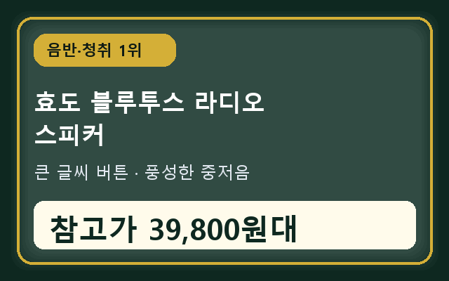
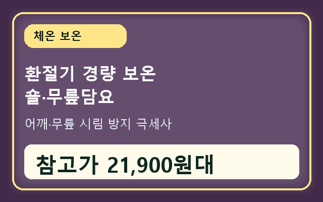
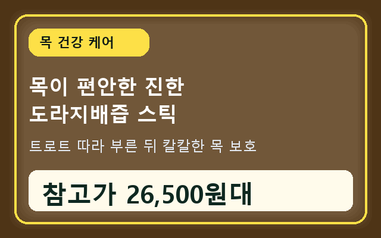

① 백운호·정통 트로트 감상용 효도 블루투스 라디오 스피커
큼직한 버튼과 풍성한 중저음 울림으로 거실이나 부엌에서 라디오 사연과 트로트를 편안하게 들으실 수 있습니다.
※ 네이버 쇼핑커넥트·쿠팡 파트너스 활동으로 수수료를 제공받을 수 있습니다.
살아오신 세월 속 고마운 가족 이야기, 그리운 추억, 신청곡을 남겨주시면 방송국 서버로 즉시 접수되어 화·금 @김쌤의영웅라디오 정규 방송 원고로 소중히 채택됩니다. (짧은 인사는 [① 1줄 응원 남기기]를 이용해 주세요!)
복잡한 영문 결제창 없이 평소 쓰시던 네이버페이(Npay)와 쿠팡 공식관에서 라디오 청취·공연 관람·목과 눈 건강에 꼭 필요한 7가지 실속 준비물만 정직하게 모았습니다.
※ 네이버 쇼핑 커넥트·쿠팡 파트너스 활동의 일환으로 판매 발생 시 일정액의 수수료를 제공받습니다.

큼직한 버튼과 풍성한 중저음 울림으로 거실이나 부엌에서 라디오 사연과 트로트를 편안하게 들으실 수 있습니다.
※ 네이버 쇼핑커넥트·쿠팡 파트너스 활동으로 수수료를 제공받을 수 있습니다.

외출이나 공원 산책 중 유튜브 라디오를 오래 켜두셔도 배터리 방전 걱정 없이 든든하게 사용하실 수 있습니다.
※ 네이버 쇼핑커넥트·쿠팡 파트너스 활동으로 수수료를 제공받을 수 있습니다.

귀 안을 답답하게 막지 않아 오래 라디오 사연을 들어도 귀가 편안하고 주변 소리도 안전하게 들립니다.
※ 네이버 쇼핑커넥트·쿠팡 파트너스 활동으로 수수료를 제공받을 수 있습니다.

딱딱한 의자에서도 허리와 엉덩이 배김을 덜어주며 가볍게 접어 가방에 넣기 좋은 휴대용 방석입니다.
※ 네이버 쇼핑커넥트·쿠팡 파트너스 활동으로 수수료를 제공받을 수 있습니다.

실내 냉방이나 아침·저녁 쌀쌀한 바람에 어깨와 무릎이 시리지 않도록 포근하게 감싸주는 경량 보온 숄입니다.
※ 네이버 쇼핑커넥트·쿠팡 파트너스 활동으로 수수료를 제공받을 수 있습니다.

스마트폰으로 사연과 가사를 읽으실 때 노화로 감소할 수 있는 황반색소 밀도 유지를 돕는 눈 건강 제품입니다.
※ 네이버 쇼핑커넥트·쿠팡 파트너스 활동으로 수수료를 제공받을 수 있습니다.

건조한 환절기나 트로트 애창곡을 따라 부르신 뒤 칼칼한 목을 부드럽고 촉촉하게 적셔주는 스틱형 건강음료입니다.
※ 네이버 쇼핑커넥트·쿠팡 파트너스 활동으로 수수료를 제공받을 수 있습니다.
※ 네이버 쇼핑 커넥트·쿠팡 파트너스 활동의 일환으로 판매 발생 시 일정액의 수수료를 제공받습니다.
5070 시니어 청취자분들께 정직하고 유익한 음향·공연·청취 건강 브랜드 협찬 및 라디오 사연 캠페인 제안은 아래 공식 이메일 창구로 문의해 주세요.